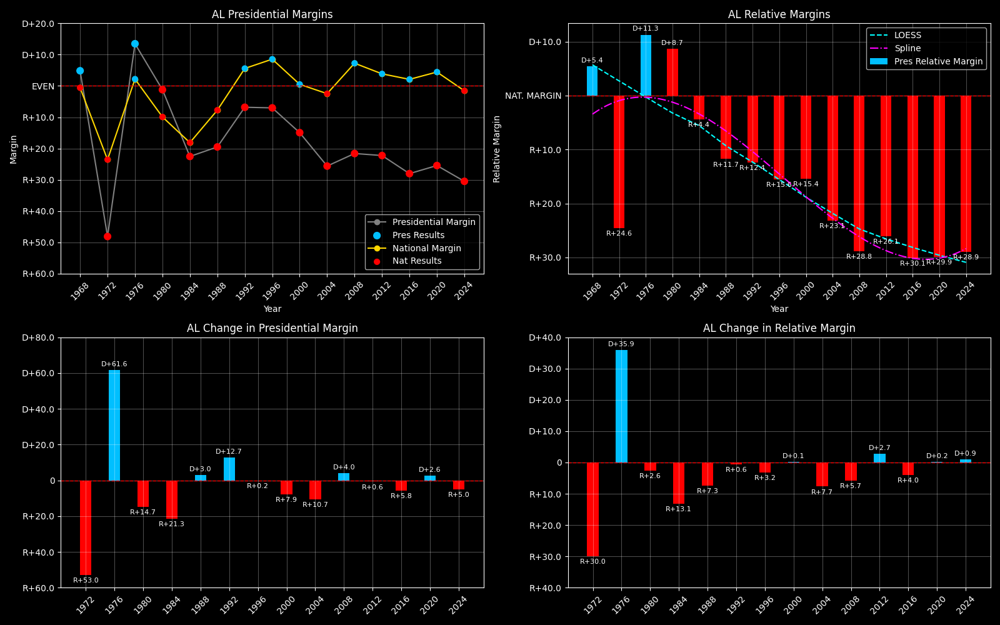

← Back to Map

Alabama (AL) statewide
Alabama (AL) — Data
| Year | EVs | D | R | Margin | Rel. Margin | Nat. Margin | Margin Δ | Rel. Margin Δ | Nat. Margin Δ | Other votes | Total votes |
|---|
| 1968 | 10 | 196,389(19.0%) | 146,284(14.2%) | D+14.6 | D+15.3 | R+0.7 | | | | 690,731(66.8%) | 1,033,404 |
| 1972 | 9 | 254,769(25.9%) | 727,034(74.1%) | R+48.1 | R+24.5 | R+23.6 | R+62.7 | R+39.8 | R+22.9 | 0(0.0%) | 981,803 |
| 1976 | 9 | 658,466(56.7%) | 501,998(43.3%) | D+13.5 | D+11.3 | D+2.2 | D+61.6 | D+35.8 | D+25.8 | 0(0.0%) | 1,160,464 |
| 1980 | 9 | 635,696(48.8%) | 651,377(50.0%) | R+1.2 | D+9.4 | R+10.6 | R+14.7 | R+1.9 | R+12.8 | 16,440(1.3%) | 1,303,513 |
| 1984 | 9 | 551,899(38.7%) | 872,849(61.3%) | R+22.5 | R+4.4 | R+18.1 | R+21.3 | R+13.8 | R+7.5 | 0(0.0%) | 1,424,748 |
| 1988 | 9 | 549,506(40.3%) | 815,576(59.7%) | R+19.5 | R+11.7 | R+7.8 | D+3.0 | R+7.3 | D+10.4 | 0(0.0%) | 1,365,082 |
| 1992 | 9 | 690,080(41.1%) | 804,283(47.9%) | R+7.6 | R+14.6 | D+6.9 | D+11.8 | R+2.8 | D+14.7 | 183,109(10.9%) | 1,677,472 |
| 1996 | 9 | 662,066(43.5%) | 768,826(50.5%) | R+7.5 | R+16.9 | D+9.5 | D+0.2 | R+2.4 | D+2.6 | 92,628(6.1%) | 1,523,520 |
| 2000 | 9 | 692,610(41.6%) | 941,172(56.5%) | R+15.2 | R+15.7 | D+0.5 | R+7.8 | D+1.2 | R+8.9 | 31,460(1.9%) | 1,665,242 |
| 2004 | 9 | 693,792(36.9%) | 1,175,513(62.5%) | R+25.8 | R+23.3 | R+2.5 | R+10.6 | R+7.5 | R+3.0 | 12,530(0.7%) | 1,881,835 |
| 2008 | 9 | 813,473(38.8%) | 1,266,530(60.3%) | R+21.8 | R+29.1 | D+7.4 | D+4.0 | R+5.9 | D+9.8 | 18,936(0.9%) | 2,098,939 |
| 2012 | 9 | 795,605(38.4%) | 1,255,875(60.7%) | R+22.4 | R+26.4 | D+3.9 | R+0.7 | D+2.8 | R+3.4 | 18,704(0.9%) | 2,070,184 |
| 2016 | 9 | 729,546(34.7%) | 1,318,259(62.7%) | R+28.7 | R+31.0 | D+2.2 | R+6.3 | R+4.6 | R+1.7 | 53,856(2.6%) | 2,101,661 |
| 2020 | 9 | 850,086(36.6%) | 1,441,167(62.0%) | R+25.8 | R+30.3 | D+4.5 | D+3.0 | D+0.6 | D+2.3 | 33,212(1.4%) | 2,324,465 |
| 2024 | 9 | 772,412(34.1%) | 1,462,616(64.6%) | R+30.9 | R+29.3 | R+1.6 | R+5.1 | D+1.0 | R+6.1 | 30,062(1.3%) | 2,265,090 |
Column explanations
- Year
- Election year.
- EVs
- Number of electoral votes allocated to this state or unit.
- D
- Number of votes for the Democratic candidate (raw count).
- R
- Number of votes for the Republican candidate (raw count).
- Margin
- Margin between the two major-party candidates ((D - R)/(D + R)).
- Rel. Margin
- The presidential margin relative to the national presidential margin (Margin - Nat. Margin).
- Nat. Margin
- The national presidential margin for that year ((D_total - R_total)/(D_total + R_total)).
- Δ
- Change (delta) in the value from the previous election year. Blank if no data for previous year.
- Other votes
- Number of votes for third-party (other) candidates (raw count).
- Total votes
- Total voter turnout or ballots cast (when provided).